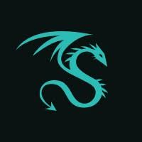
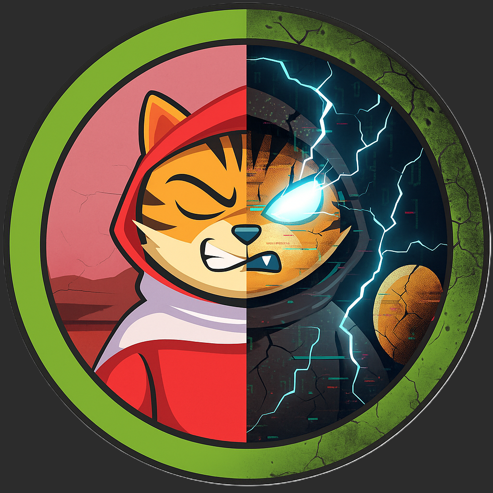
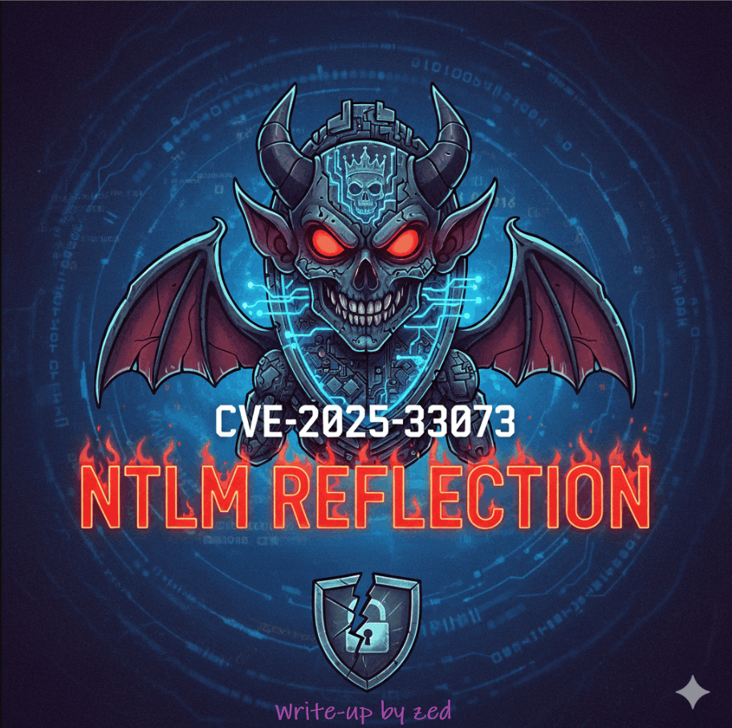
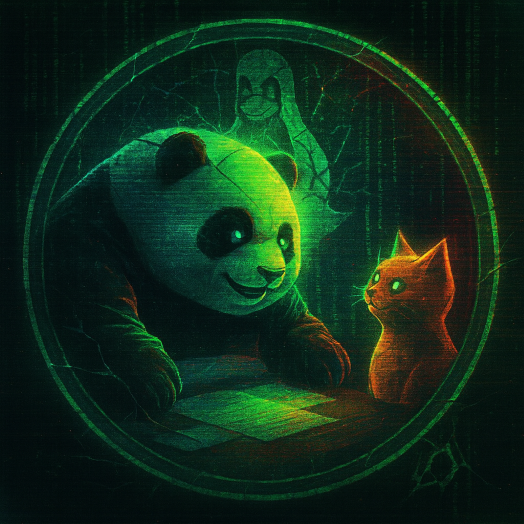
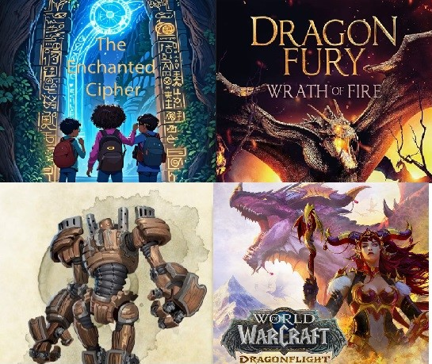

Write-Ups
Dragos OT CTF 2025 — Write-up

Conversor.htb — Write-up

THM - NTLM REFLECTION CVE-2025-33073

Planning.htb — Write-up

K17 CTF
As you ascend the treacherous slopes of the Flame Peaks, the scorching heat and shifting volcanic terrain test your endurance with every step...

BYUCTF - Chall web - 2025
Le BYUCTF revient pour sa quatrième édition ! Pendant 24 heures, les participants plongeront dans des défis variés — web, reverse, pwn, OSINT, crypto, forensic et autres — organisés par le Cybersecurity Group de la Brigham Young University-Provo, offrant un terrain de jeu stimulant pour débutants comme intermédiaires.
HTB - Chall code - Apocalypse 2k25
Lors du CTF Hack The Box Apocalypse 2025, j’ai complété les 4 challenges code. De la combinaison algorithmique à la cryptanalyse, en passant par la recherche de chemin et le décodage spatial, chaque défi sollicitait rigueur, logique et créativité.

HTB - Moonbeam Tavern - Apocalypse 2k25
In the heart of Valeria’s bustling capital, the Moonbeam Tavern stands as a lively hub of whispers, wagers, and illicit dealings...
HTB Trial by Fire - Apocalypse 2k25
As you ascend the treacherous slopes of the Flame Peaks, the scorching heat and shifting volcanic terrain test your endurance with every step...